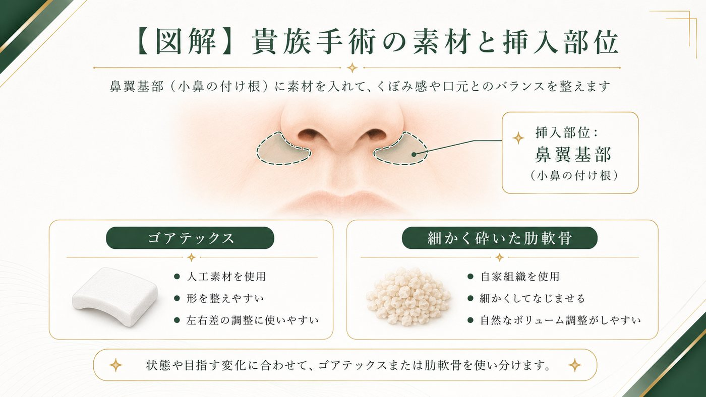
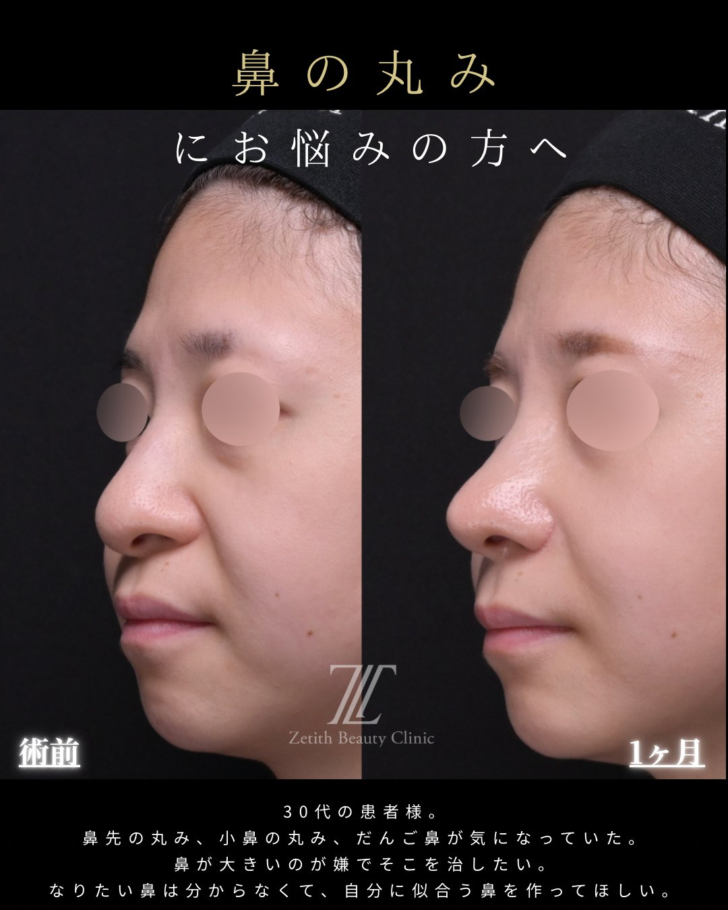

【福岡】貴族手術とは？
鼻の付け根をゴアテックス・肋軟骨で整える


「笑うと鼻の脇がへこむ」「鼻の下〜口元が寂しく見える」「ほうれい線の内側（鼻に近い方）が落ち込んでいる」——こうしたお悩みで選択肢になるのが貴族手術（きぞくしゅじゅつ）、正式には鼻翼基部形成（びよくきぶけいせい）と呼ばれる施術です。小鼻の脇〜鼻の付け根のくぼみを、ゴアテックスまたは肋軟骨で立体的に整えます。名前は聞くけれど何をするのか分かりにくい術式なので、この記事では貴族手術とは何か、素材の違い、費用・ダウンタイム・リスク・他院修正まで、鼻整形2,000件以上を担当する院長が解説します。
Section 01貴族手術（鼻翼基部形成）とは？
貴族手術とは、小鼻の脇から鼻の付け根（鼻翼基部）にかけてのくぼみに、ゴアテックスまたは肋軟骨を入れて立体感を出す施術です。この部分がへこんでいると、鼻の下〜口元が平坦・寂しく見えたり、相対的に口元が前に出て見えたりします。ここをふっくらと整えることで、次のような変化が期待できます。
口元まわりの立体感
鼻の付け根のくぼみを埋め、平坦な印象にメリハリを出します。
ほうれい線の内側の落ち込み
鼻に近い側の落ち込みを土台から持ち上げ、影を目立ちにくくします。
横顔（Eライン）の印象
鼻の付け根を前方向に整えることで、横顔のバランスを補います。
鼻の下の長さの見え方
付け根の立体感で、間のびして見える鼻下の印象を整えます。
Section 02こんなお悩みに向いている
次のようなお悩みは、貴族手術が選択肢になりやすいケースです（適応は診察により判断します）。
- 笑うと小鼻の脇がへこむ／鼻の付け根が落ち込んでいる
- ほうれい線の内側（鼻に近い方）の影が気になる
- 鼻の下〜口元が平坦で、立体感が欲しい
- 横顔で口元が前に出て見える／Eラインを整えたい
口元の突出感が強い場合は、貴族手術だけでなく歯科・骨格的なアプローチが適することもあります。まずは原因を診させていただき、適した方法をご提案します。
Section 03隆鼻術・猫手術との違い
「鼻の付近をふっくらさせる施術」はいくつかあり、混同されがちです。目的の部位で区別すると分かりやすくなります。
| 施術 | 整える部位 | 主な目的 |
|---|---|---|
| 貴族手術 （鼻翼基部形成） | 小鼻の脇〜鼻の付け根 | 付け根のくぼみを埋めて立体感を出す |
| 隆鼻術 | 鼻すじ（鼻背） | 鼻すじを高くする |
| 猫手術 | 鼻の下〜上唇の境（鼻唇角） | 鼻中隔延長のグラフトに自家組織を足して鼻唇角にメリハリを出す |
Section 04ゴアテックスと肋軟骨の使い分け
当院の貴族手術では、入れる素材をゴアテックスか肋軟骨から選びます。どちらが良い・悪いではなく、希望する立体感・異物への考え方・傷の位置で使い分けます。
| 項目 | ゴアテックス | 肋軟骨 |
|---|---|---|
| 種類 | 医療用の人工素材 | 自分のあばらの軟骨（自家組織） |
| 形の調整 | 形を整えやすい | 削って形を作る |
| 追加の傷 | 採取部の傷がない | 胸に数cmの傷 |
| 向くケース | 手軽さ・採取部の傷を作りたくない | 異物を入れたくない・自家組織で整えたい |
| 主な注意点 | 人工物のため感染・位置ずれ・必要時の除去 | 採取部の負担、形の作り込みが必要 |

Section 05当院の貴族手術
当院の貴族手術は、顔の表面に傷を残さないことを大切にしています。多くの場合、口の中（上唇の裏側）からアプローチして鼻翼基部の深い層に素材を入れるため、外から見える傷が残りません。鼻先や鼻すじなど他の部位も一緒に整えたい場合は、鼻整形と組み合わせて全体のバランスを設計します。
Section 06症例（正面・斜め・横）
当院は正面・斜め・横の3方向すべての症例を掲載しています（貴族手術は特に横顔と正面のバランスが大切なためです）。



- 施術内容
- 貴族手術（鼻翼基部形成／ゴアテックスまたは肋軟骨）
- 料 金
- カウンセリングにてご案内（素材により変動）
- 主なリスク・副作用
- 腫れ・内出血・左右差・感染・素材の位置ずれ・仕上がりの個人差 等
- ダウンタイム
- 約1〜2週間
※ 正面・斜め・横の3方向を掲載しています。効果には個人差があり、リスク・副作用を伴います。自由診療（保険適用外）。
Section 07費用
貴族手術の費用は、素材（ゴアテックスか肋軟骨か）や他の施術との組み合わせによって変わります。正確な費用はカウンセリングでお見積りをご案内します。別途、麻酔・術前検査・お薬代がかかります。
Section 08ダウンタイム
貴族手術のダウンタイムの目安は、腫れ・内出血が1〜2週間ほどで落ち着くことが多いです。口の中からアプローチした場合は、しばらく上唇まわりの腫れやつっぱり感、食事のしにくさを感じることがあります。肋軟骨を採取した場合は、胸の傷の痛みが数日〜1週間程度続くことがあります。経過には個人差があり、大きな予定の1〜2か月前までに施術を終えるスケジュールがおすすめです。施術別の経過はダウンタイム完全ガイドで解説しています。
Section 09リスク・副作用
必ずご確認ください
貴族手術には、以下のようなリスク・副作用が生じる可能性があります。カウンセリングで一人ひとりに合わせて詳しくご説明します。
- 腫れ・内出血・痛み・むくみ（時間の経過とともに軽快することが多い）
- 左右差、入れる量による膨らみ・口元の見え方の変化
- ゴアテックス（人工物）の場合：感染・位置のずれ・露出、必要時の除去
- 肋軟骨を採取した場合：胸の傷・痛み、採取部の変形、まれに気胸などの可能性
- 口の中の切開に伴う一時的な腫れ・つっぱり感・食事のしにくさ、感覚の変化
- 感染、仕上がりのイメージとの違い、効果の個人差
Section 10他院修正
「他院で入れた貴族手術の人工物が気になる」「入れすぎて不自然」といった貴族手術の修正・入れ替え・除去のご相談にも対応しています。他院で入れたメッシュやオステオポールの除去と合わせて整え直すケースもあります。修正は状態によって方針が大きく変わるため、まずは現在の状態を診察させてください。対応できる術式の全体像は術式ガイドの他院修正でも解説しています。
Section 11よくある質問
貴族手術をすると顔に傷が残りますか？
多くの場合、口の中（上唇の裏側）からアプローチするため、顔の表面に傷は残りません。アプローチの方法は状態により決めますので、カウンセリングでご説明します。
ゴアテックスと肋軟骨、どちらがいいですか？
採取部の傷を作りたくない・手軽に整えたい場合はゴアテックス、異物を入れたくない・自家組織で整えたい場合は肋軟骨が向きます。希望と状態に合わせて診察でご相談しながら決めます。
ほうれい線が消えますか？
鼻に近い側の落ち込みを土台から持ち上げることで、影を目立ちにくくできる場合があります。ほうれい線の原因は複数あるため、貴族手術が適するかは診察で判断します。効果には個人差があります。
隆鼻術とは何が違いますか？
隆鼻術は鼻すじを高くする施術、貴族手術は小鼻の脇〜鼻の付け根の立体感を整える施術で、目的の部位が異なります。両方を組み合わせることもあります。
他院で入れた貴族手術の修正もできますか？
人工物の入れ替え・除去、メッシュやオステオポールの除去と合わせた整え直しにも対応しています。状態により方針が変わるため、診察で判断します。
2021年、神戸大学医学部を卒業。美容外科の道へ進み、前職で大阪院院長を経て、2025年よりZetith Beauty Clinic 福岡院の院長を務める。これまでに鼻整形2,000件以上を担当。皮膚の外側に傷を残さないクローズド法を軸としながら、肋軟骨を用いた全自家組織の鼻整形やデザイン性の高い施術、他院修正まで、患者のニーズに応じて幅広い術式を使い分ける。傷を出さずにしっかりと変化を出す施術を得意とし、術直後の仕上がりまで丁寧に整えることを大切にしている。
院長のInstagram ＠zetith_hane福岡で貴族手術を検討している方へ
鼻の付け根の立体感は、入れる量と素材選び、そして横顔と正面のバランスで仕上がりが変わります。あなたに必要な分を、鼻整形2,000件以上の医師が診察のうえご提案します。まずは無料カウンセリングでお気軽にご相談ください。
※ 本記事は一般的な医療情報の提供を目的としたものであり、効果を保証するものではありません。治療の適応・費用・リスクは診察により個別に判断されます。効果には個人差があります。鼻整形・貴族手術は自由診療（保険適用外）です。